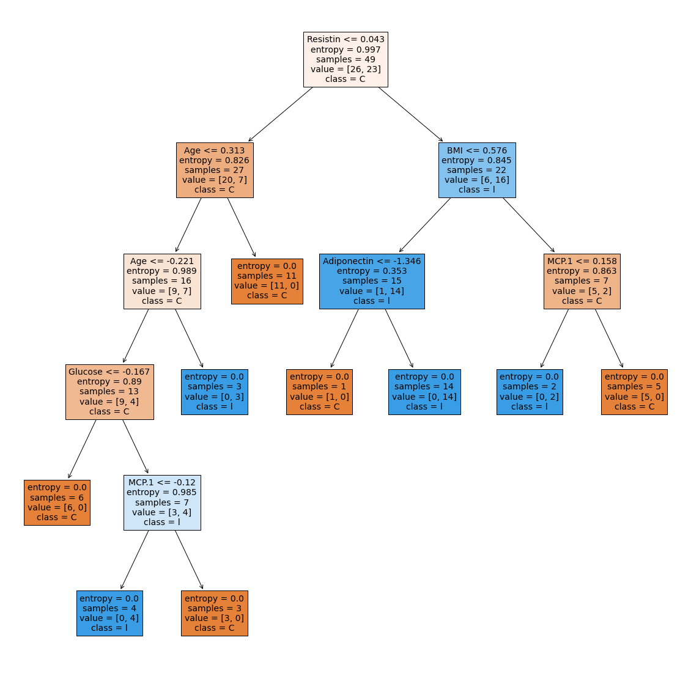

Ulangan Tengah Semester
Ulangan Tengah Semester#
Klasifikasi K-Nearest Neighbor (K-NN)
# Import Library
import pandas as pd
import numpy as np
import seaborn as sns
import matplotlib.pyplot as plt
# Import Dataset
link="https://raw.githubusercontent.com/bintangradityaputra/contoh/master/dataR2.csv"
data = pd.read_csv(link)
# Membaca Dataset
data
| Age | BMI | Glucose | Insulin | HOMA | Leptin | Adiponectin | Resistin | MCP.1 | Classification | |
|---|---|---|---|---|---|---|---|---|---|---|
| 0 | 48 | 23.500000 | 70 | 2.707 | 0.467409 | 8.8071 | 9.702400 | 7.99585 | 417.114 | 1 |
| 1 | 83 | 20.690495 | 92 | 3.115 | 0.706897 | 8.8438 | 5.429285 | 4.06405 | 468.786 | 1 |
| 2 | 82 | 23.124670 | 91 | 4.498 | 1.009651 | 17.9393 | 22.432040 | 9.27715 | 554.697 | 1 |
| 3 | 68 | 21.367521 | 77 | 3.226 | 0.612725 | 9.8827 | 7.169560 | 12.76600 | 928.220 | 1 |
| 4 | 86 | 21.111111 | 92 | 3.549 | 0.805386 | 6.6994 | 4.819240 | 10.57635 | 773.920 | 1 |
| ... | ... | ... | ... | ... | ... | ... | ... | ... | ... | ... |
| 111 | 45 | 26.850000 | 92 | 3.330 | 0.755688 | 54.6800 | 12.100000 | 10.96000 | 268.230 | 2 |
| 112 | 62 | 26.840000 | 100 | 4.530 | 1.117400 | 12.4500 | 21.420000 | 7.32000 | 330.160 | 2 |
| 113 | 65 | 32.050000 | 97 | 5.730 | 1.370998 | 61.4800 | 22.540000 | 10.33000 | 314.050 | 2 |
| 114 | 72 | 25.590000 | 82 | 2.820 | 0.570392 | 24.9600 | 33.750000 | 3.27000 | 392.460 | 2 |
| 115 | 86 | 27.180000 | 138 | 19.910 | 6.777364 | 90.2800 | 14.110000 | 4.35000 | 90.090 | 2 |
116 rows × 10 columns
# Jumlah baris dan kolom pada dataset
print(len(data), len(data.columns))
116 10
# menemukan Missing Value
data.isna().sum()
Age 0
BMI 0
Glucose 0
Insulin 0
HOMA 0
Leptin 0
Adiponectin 0
Resistin 0
MCP.1 0
Classification 0
dtype: int64
# melihat tipe data di setiap variabel
data.info()
<class 'pandas.core.frame.DataFrame'>
RangeIndex: 116 entries, 0 to 115
Data columns (total 10 columns):
# Column Non-Null Count Dtype
--- ------ -------------- -----
0 Age 116 non-null int64
1 BMI 116 non-null float64
2 Glucose 116 non-null int64
3 Insulin 116 non-null float64
4 HOMA 116 non-null float64
5 Leptin 116 non-null float64
6 Adiponectin 116 non-null float64
7 Resistin 116 non-null float64
8 MCP.1 116 non-null float64
9 Classification 116 non-null int64
dtypes: float64(7), int64(3)
memory usage: 9.2 KB
# Deklarasi heatmap untuk menemukan korelasi
plt.subplots(figsize=(20, 20))
sns.heatmap(data.corr(), cmap = 'RdYlGn', annot = True)
<matplotlib.axes._subplots.AxesSubplot at 0x7f88535f7390>
# melihat value kolom
data.columns
Index(['Age', 'BMI', 'Glucose', 'Insulin', 'HOMA', 'Leptin', 'Adiponectin',
'Resistin', 'MCP.1', 'Classification'],
dtype='object')
# tidak ada outliers untuk kolom Age
sns.boxplot(data['Age'])
/usr/local/lib/python3.7/dist-packages/seaborn/_decorators.py:43: FutureWarning: Pass the following variable as a keyword arg: x. From version 0.12, the only valid positional argument will be `data`, and passing other arguments without an explicit keyword will result in an error or misinterpretation.
FutureWarning
<matplotlib.axes._subplots.AxesSubplot at 0x7f88513c3cd0>
# tidak ada outliers untuk kolom BMI
sns.boxplot(data['BMI'])
/usr/local/lib/python3.7/dist-packages/seaborn/_decorators.py:43: FutureWarning: Pass the following variable as a keyword arg: x. From version 0.12, the only valid positional argument will be `data`, and passing other arguments without an explicit keyword will result in an error or misinterpretation.
FutureWarning
<matplotlib.axes._subplots.AxesSubplot at 0x7f8851392950>
# bebrapa outliers untuk kolom Glucose
sns.boxplot(data['Glucose'])
/usr/local/lib/python3.7/dist-packages/seaborn/_decorators.py:43: FutureWarning: Pass the following variable as a keyword arg: x. From version 0.12, the only valid positional argument will be `data`, and passing other arguments without an explicit keyword will result in an error or misinterpretation.
FutureWarning
<matplotlib.axes._subplots.AxesSubplot at 0x7f884f64bc50>
# Outliers untuk kolom Insulin
sns.boxplot(data['Insulin'])
/usr/local/lib/python3.7/dist-packages/seaborn/_decorators.py:43: FutureWarning: Pass the following variable as a keyword arg: x. From version 0.12, the only valid positional argument will be `data`, and passing other arguments without an explicit keyword will result in an error or misinterpretation.
FutureWarning
<matplotlib.axes._subplots.AxesSubplot at 0x7f884f63b5d0>
# terdapat banyak outliers untuk kolom HOMA
sns.boxplot(data['HOMA'])
/usr/local/lib/python3.7/dist-packages/seaborn/_decorators.py:43: FutureWarning: Pass the following variable as a keyword arg: x. From version 0.12, the only valid positional argument will be `data`, and passing other arguments without an explicit keyword will result in an error or misinterpretation.
FutureWarning
<matplotlib.axes._subplots.AxesSubplot at 0x7f884f5b74d0>
# Distribution plot untuk kolom HOMA
sns.distplot(data['HOMA'])
/usr/local/lib/python3.7/dist-packages/seaborn/distributions.py:2619: FutureWarning: `distplot` is a deprecated function and will be removed in a future version. Please adapt your code to use either `displot` (a figure-level function with similar flexibility) or `histplot` (an axes-level function for histograms).
warnings.warn(msg, FutureWarning)
<matplotlib.axes._subplots.AxesSubplot at 0x7f884f4dc790>
# Outliers untuk kolom Leptin
sns.boxplot(data["Leptin"])
/usr/local/lib/python3.7/dist-packages/seaborn/_decorators.py:43: FutureWarning: Pass the following variable as a keyword arg: x. From version 0.12, the only valid positional argument will be `data`, and passing other arguments without an explicit keyword will result in an error or misinterpretation.
FutureWarning
<matplotlib.axes._subplots.AxesSubplot at 0x7f884f468b50>
# Outliers untuk kolom Adiponectin
sns.boxplot(data['Adiponectin'])
/usr/local/lib/python3.7/dist-packages/seaborn/_decorators.py:43: FutureWarning: Pass the following variable as a keyword arg: x. From version 0.12, the only valid positional argument will be `data`, and passing other arguments without an explicit keyword will result in an error or misinterpretation.
FutureWarning
<matplotlib.axes._subplots.AxesSubplot at 0x7f884f3ab490>
# Outliers untuk kolom Resistin
sns.boxplot(data['Resistin'])
/usr/local/lib/python3.7/dist-packages/seaborn/_decorators.py:43: FutureWarning: Pass the following variable as a keyword arg: x. From version 0.12, the only valid positional argument will be `data`, and passing other arguments without an explicit keyword will result in an error or misinterpretation.
FutureWarning
<matplotlib.axes._subplots.AxesSubplot at 0x7f884f321f10>
# Outliers untuk kolom MCP.1
sns.boxplot(data['MCP.1'])
/usr/local/lib/python3.7/dist-packages/seaborn/_decorators.py:43: FutureWarning: Pass the following variable as a keyword arg: x. From version 0.12, the only valid positional argument will be `data`, and passing other arguments without an explicit keyword will result in an error or misinterpretation.
FutureWarning
<matplotlib.axes._subplots.AxesSubplot at 0x7f884f31b750>
cancer=data.copy()
insulinQ1=cancer['Insulin'].quantile(0.25)
insulinQ3=cancer['Insulin'].quantile(0.75)
insulinIQR=insulinQ3-insulinQ1
lowerliminsulin=insulinQ1-1.5*insulinIQR
upperliminsulin=insulinQ3+1.5*insulinIQR
insulrem=cancer[(cancer['Insulin']>lowerliminsulin)&(upperliminsulin > cancer['Insulin'])]
sns.boxplot(insulrem['Glucose'])
/usr/local/lib/python3.7/dist-packages/seaborn/_decorators.py:43: FutureWarning: Pass the following variable as a keyword arg: x. From version 0.12, the only valid positional argument will be `data`, and passing other arguments without an explicit keyword will result in an error or misinterpretation.
FutureWarning
<matplotlib.axes._subplots.AxesSubplot at 0x7f884f205fd0>
glucoseQ1=insulrem['Glucose'].quantile(0.25)
glucoseQ3=insulrem['Glucose'].quantile(0.75)
glucoseIQR=glucoseQ3-glucoseQ1
upperlimglucose=glucoseQ3+1.5*glucoseIQR
lowerlimglucose=glucoseQ1-1.5*glucoseIQR
glucoserem=insulrem[(insulrem['Glucose'] > lowerlimglucose)&(upperlimglucose > insulrem['Glucose'])]
sns.boxplot(glucoserem['HOMA'])
/usr/local/lib/python3.7/dist-packages/seaborn/_decorators.py:43: FutureWarning: Pass the following variable as a keyword arg: x. From version 0.12, the only valid positional argument will be `data`, and passing other arguments without an explicit keyword will result in an error or misinterpretation.
FutureWarning
<matplotlib.axes._subplots.AxesSubplot at 0x7f884f186710>
homaQ1=glucoserem['HOMA'].quantile(0.25)
homaQ3=glucoserem['HOMA'].quantile(0.75)
homaIQR=homaQ3-homaQ1
upperlimhoma=homaQ3+1.5*homaIQR
lowerlimhoma=homaQ1-1.5*homaIQR
homarem=glucoserem[(glucoserem['HOMA'] > lowerlimhoma)&(upperlimhoma > glucoserem['HOMA'])]
sns.boxplot(homarem['Adiponectin'])
/usr/local/lib/python3.7/dist-packages/seaborn/_decorators.py:43: FutureWarning: Pass the following variable as a keyword arg: x. From version 0.12, the only valid positional argument will be `data`, and passing other arguments without an explicit keyword will result in an error or misinterpretation.
FutureWarning
<matplotlib.axes._subplots.AxesSubplot at 0x7f884f1627d0>
AdiponectinQ1=homarem['Adiponectin'].quantile(0.25)
AdiponectinQ3=homarem['Adiponectin'].quantile(0.75)
AdiponectinIQR=AdiponectinQ3-AdiponectinQ1
upperlimAdiponectin=AdiponectinQ3+1.5*AdiponectinIQR
lowerlimAdiponectin=AdiponectinQ1-1.5*AdiponectinIQR
adirem=homarem[(homarem['Adiponectin'] > lowerlimAdiponectin)&(upperlimAdiponectin > homarem['Adiponectin'])]
sns.boxplot(adirem['Resistin'])
/usr/local/lib/python3.7/dist-packages/seaborn/_decorators.py:43: FutureWarning: Pass the following variable as a keyword arg: x. From version 0.12, the only valid positional argument will be `data`, and passing other arguments without an explicit keyword will result in an error or misinterpretation.
FutureWarning
<matplotlib.axes._subplots.AxesSubplot at 0x7f884f16dcd0>
resistinQ1=adirem['Resistin'].quantile(0.25)
resistinQ3=adirem['Resistin'].quantile(0.75)
resistinIQR=resistinQ3-resistinQ1
lowerlimresistin=resistinQ1-1.5*resistinIQR
upperlimresistin=resistinQ3+1.5*resistinIQR
Resistinrem=adirem[(adirem['Resistin'] > lowerlimresistin)&(upperlimresistin > adirem['Resistin'])]
sns.boxplot(Resistinrem['Leptin'])
/usr/local/lib/python3.7/dist-packages/seaborn/_decorators.py:43: FutureWarning: Pass the following variable as a keyword arg: x. From version 0.12, the only valid positional argument will be `data`, and passing other arguments without an explicit keyword will result in an error or misinterpretation.
FutureWarning
<matplotlib.axes._subplots.AxesSubplot at 0x7f884f0bdd90>
LeptinQ1=Resistinrem['Leptin'].quantile(0.25)
LeptinQ3=Resistinrem['Leptin'].quantile(0.75)
LeptinIQR=LeptinQ3-LeptinQ1
lowerlimLeptin=LeptinQ1-1.5*LeptinIQR
upperlimLeptin=LeptinQ3+1.5*LeptinIQR
leptinrem=Resistinrem[(Resistinrem['Leptin'] > lowerlimLeptin)&(upperlimLeptin > Resistinrem['Leptin'])]
sns.boxplot(leptinrem['MCP.1'])
/usr/local/lib/python3.7/dist-packages/seaborn/_decorators.py:43: FutureWarning: Pass the following variable as a keyword arg: x. From version 0.12, the only valid positional argument will be `data`, and passing other arguments without an explicit keyword will result in an error or misinterpretation.
FutureWarning
<matplotlib.axes._subplots.AxesSubplot at 0x7f884f451ad0>
MCPQ1=leptinrem['MCP.1'].quantile(0.25)
MCPQ3=leptinrem['MCP.1'].quantile(0.75)
MCPIQR=MCPQ3-MCPQ1
lowerlimMCP=MCPQ1-1.5*MCPIQR
upperlimMCP=MCPQ3+1.5*MCPIQR
mcprem=leptinrem[(leptinrem['MCP.1'] > lowerlimMCP)&(upperlimMCP > leptinrem['MCP.1'])]
mcprem.shape
sns.boxplot(mcprem['MCP.1'])
/usr/local/lib/python3.7/dist-packages/seaborn/_decorators.py:43: FutureWarning: Pass the following variable as a keyword arg: x. From version 0.12, the only valid positional argument will be `data`, and passing other arguments without an explicit keyword will result in an error or misinterpretation.
FutureWarning
<matplotlib.axes._subplots.AxesSubplot at 0x7f884f21d590>
# membuat fitur dari data
X = mcprem.iloc[:, 0:9]
#membuat target variabel dari data
Y = mcprem.iloc[:, 9]
from sklearn.preprocessing import StandardScaler
ss = StandardScaler()
X = ss.fit_transform(X)
X = pd.DataFrame(X)
# Splitting dataset untuk uji dan data latih
from sklearn.model_selection import train_test_split
xtrain,xtest,ytrain,ytest=train_test_split(X,Y,test_size=0.3)
# Import KNeighbors Classifier dari sklearn
# menemukan akurasi pada data latih dan data uji menggunakan Euclidean Distance
from sklearn.neighbors import KNeighborsClassifier
from sklearn.metrics import accuracy_score
for x in range(5,10,2):
knn=KNeighborsClassifier(n_neighbors=x,metric='minkowski',weights='distance')
knn.fit(xtrain,ytrain)
train_ypred=knn.predict(xtrain)
acc_train_score=accuracy_score(train_ypred,ytrain)
test_ypred=knn.predict(xtest)
acc_test_score=accuracy_score(test_ypred,ytest)
print(f'Nilai Akurasi untuk data latih dan data uji adalah : {acc_train_score} and {acc_test_score} respectively for {x} neighbours')
Nilai Akurasi untuk data latih dan data uji adalah : 1.0 and 0.6818181818181818 respectively for 5 neighbours
Nilai Akurasi untuk data latih dan data uji adalah : 1.0 and 0.7727272727272727 respectively for 7 neighbours
Nilai Akurasi untuk data latih dan data uji adalah : 1.0 and 0.7272727272727273 respectively for 9 neighbours
knn=KNeighborsClassifier(n_neighbors=7,metric='minkowski',weights='distance')
knn.fit(xtrain,ytrain)
KNeighborsClassifier(n_neighbors=7, weights='distance')
trainypred=knn.predict(xtrain)
from sklearn.metrics import classification_report
print(classification_report(trainypred,ytrain))
precision recall f1-score support
1 1.00 1.00 1.00 26
2 1.00 1.00 1.00 23
accuracy 1.00 49
macro avg 1.00 1.00 1.00 49
weighted avg 1.00 1.00 1.00 49
# Akurasi Score untuk data latih
accuracy_score(trainypred,ytrain)
1.0
testypredicted=knn.predict(xtest)
# Akurasi Score untuk data Uji
from sklearn.metrics import accuracy_score
accuracy_score(testypredicted,ytest)
0.7727272727272727
import pickle
#Save our model as a pickle to a file
pickle.dump(knn, open("my_knn_model.pickle.dat", "wb"))
# delete the existing knn model from the environment
del knn
#Load the pickled object from the file
load_knn=pickle.load(open("my_knn_model.pickle.dat", "rb"))
# Use the loaded model to make predictions
load_knn.predict(xtest)
array([1, 1, 1, 1, 1, 1, 1, 2, 2, 1, 1, 1, 2, 1, 2, 1, 2, 1, 1, 2, 2, 2])
Classification Using Decision Tree
from sklearn import tree
from matplotlib import pyplot as plt
# membuat klasifikasi untuk decisionn tree
clf_tree = tree.DecisionTreeClassifier(criterion = "entropy")
clf_tree = clf_tree.fit(xtrain, ytrain)
# melihat klasifikasi dari dataset
data.Classification.value_counts()
2 64
1 52
Name: Classification, dtype: int64
# Variable Independent
X = data.drop(['Classification'], axis = 1)
X.head()
| Age | BMI | Glucose | Insulin | HOMA | Leptin | Adiponectin | Resistin | MCP.1 | |
|---|---|---|---|---|---|---|---|---|---|
| 0 | 48 | 23.500000 | 70 | 2.707 | 0.467409 | 8.8071 | 9.702400 | 7.99585 | 417.114 |
| 1 | 83 | 20.690495 | 92 | 3.115 | 0.706897 | 8.8438 | 5.429285 | 4.06405 | 468.786 |
| 2 | 82 | 23.124670 | 91 | 4.498 | 1.009651 | 17.9393 | 22.432040 | 9.27715 | 554.697 |
| 3 | 68 | 21.367521 | 77 | 3.226 | 0.612725 | 9.8827 | 7.169560 | 12.76600 | 928.220 |
| 4 | 86 | 21.111111 | 92 | 3.549 | 0.805386 | 6.6994 | 4.819240 | 10.57635 | 773.920 |
# variable dependent
y = data["Classification"]
y.head()
0 1
1 1
2 1
3 1
4 1
Name: Classification, dtype: int64
# Desain untuk Decision Tree
fig = plt.figure(figsize=(20,20))
_ = tree.plot_tree(clf_tree, feature_names=list(data.columns.values)[:9], class_names=list(data.columns.values)[9] ,filled=True)

# Menghitung akurasi model untuk data latih dan data uji
print("Score data train :", clf_tree.score(xtrain, ytrain))
print("Score data test :", clf_tree.score(xtest, ytest))
Score data train : 1.0
Score data test : 0.8181818181818182